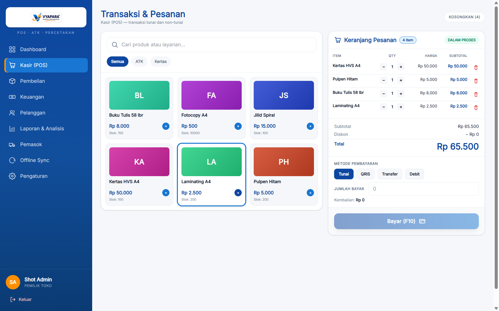
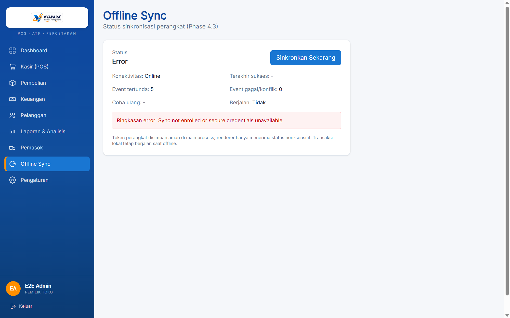

Panduan Penggunaan & Penjelasan Aplikasi POS Desktop Offline-First untuk Toko ATK, Kertas & Percetakan
Bab 1 — Penjelasan Aplikasi
1.1 Apa itu VYAPARA?
VYAPARA Business Management adalah aplikasi Point of Sale (POS) desktop berbasis offline-first untuk toko ATK (Alat Tulis Kantor), kertas, dan layanan percetakan/fotocopy/laminating/jilid. Aplikasi berjalan di komputer toko tanpa perlu koneksi internet, menyimpan seluruh data secara lokal, dan — ketika server tersedia — menyinkronkan data ke server terpusat untuk pemantauan multi-cabang.
Ringkasnya: VYAPARA = mesin kasir + manajemen stok + pelanggan + pemasok + keuangan + laporan + sinkronisasi offline-first, dalam satu aplikasi desktop Windows.
1.2 Arsitektur yang digunakan
Lapisan
Teknologi
Fungsi
Desktop shell
Electron (v45)
Menjalankan app Windows native; jendela utama aplikasi
Renderer / UI
React 19 + Tailwind CSS v4 + Zustand
Tampilan: Dashboard, POS, Keuangan, dll.
Main process
Electron main + IPC handlers
Otak aplikasi: akses database, autentikasi, sinkronisasi — renderer tidak pernah menyentuh file langsung
Database lokal
SQLite (better-sqlite3, WAL mode)
Penyimpanan semua data: produk, transaksi, stok, pelanggan, pemasok, keuangan
ORM & migrasi
Drizzle ORM + file migrasi SQL (14 migrasi)
Membuat tabel saat pertama dijalankan; seed peran, kategori, satuan, izin
Sync engine
outbox → server → inbound apply; conflict detector; queue
Mengirim perubahan ke server terpusat dan menerima perubahan dari perangkat lain
Server sinkronisasi
Node HTTP + SQLite (apps/sync-server)
Server terpusat per-organisasi (multi-tenant), validasi token & idempotency
Alur data per transaksi penjualan
Pilih produk→Keranjang→Bayar→Transaksi + stok terpotong→Event keluar ke outbox→Sync engine→Sinkron ke server
Seluruh langkah transaksi berjalan dalam satu transaksi database — jika listrik/aplikasi mati di tengah proses, tidak ada data separuh (atomik).
1.3 Modul yang tersedia
Modul
Kegunaan
Peran utama
Dashboard
Omzet hari ini, tren penjualan 7 hari, komposisi pendapatan per kategori, stok menipis, pesanan terbaru
Pemilik / semua
Kasir (POS)
Transaksi penjualan: cari produk, keranjang, empat metode pembayaran, cetak struk
Kasir
Keuangan
Dompet kas (buka/tutup), catat pemasukan/pengeluaran, laporan laba rugi & arus kas
Keuangan / pemilik
Pelanggan
Daftar pelanggan, piutang (pembelian kredit), pembayaran piutang
Kasir / pemilik
Pemasok
Daftar pemasok, faktur masuk, pembayaran faktur
Admin / keuangan
Pembelian
Purchase order ke pemasok, penerimaan barang, retur beli
Admin
Laporan & Analisis
Laporan penjualan, laba kotor, produk terlaris/bergerak lambat, valuasi stok, kinerja kasir
Pemilik / keuangan
Offline Sync
Status sinkronisasi perangkat, picu sinkron manual, retry/konflik
Semua
Pengaturan
Manajemen pengguna, peran & izin, pengaturan toko, backup database
Administrator
1.4 Prinsip desain: offline-first
Transaksi tetap berjalan tanpa internet. Penjualan, cetak struk, dan stok terpotong langsung di komputer toko.
Data disimpan lokal pada file database SQLite di folder data pengguna Windows.
Saat online, setiap perubahan (event) dikirim ke server terpusat; konflik antar perangkat dideteksi dan diklasifikasikan otomatis.
Tidak ada data hilang saat jaringan putus di tengah sinkronisasi — event yang gagal akan di-retry dengan backoff, tidak dihapus.
1.5 Multi-perangkat & multi-organisasi
Setiap perangkat toko didaftarkan ke satu organisasi (mis. Toko Sinar ATK — Cabang Maju Jaya). Server menegakkan isolasi tenant: perangkat organisasi A tidak dapat membaca data organisasi B, meskipun keduanya terdaftar di server yang sama. Satu organisasi dapat memiliki banyak perangkat (kasir, back-office, cabang kedua) yang saling sinkron.
Penting: Pemantauan multi-cabang terpusat (dashboard web owner) berada di pihak server dan belum termasuk dalam rilis desktop ini. Lihat Bab 15.
Hanya membaca: produk, transaksi, pelanggan, pemasok, laporan, pengaturan (baca)
Semua penempatan/perubahan/penghapusan
Izin selalu ditegakkan di sisi main process (server-side), bukan hanya disembunyikan di tampilan — kasir tidak bisa mengakses data keuangan meski mengedit URL.
Bab 2 — Instalasi & Pertama Kali Menjalankan
2.1 Prasyarat
Windows 10 atau Windows 11 (64-bit)
Minimal 4 GB RAM (disarankan 8 GB), 500 MB ruang disk kosong
Layar minimal 1366×768 (lebar optimal 1400 px+)
Tidak memerlukan koneksi internet untuk beroperasi
2.2 Memasang aplikasi
1
Salin file installer VYAPARA Setup 1.0.0.exe ke komputer toko.
2
Klik dua kali installer. Windows menampilkan peringatan Windows protected your PC karena aplikasi belum bersertifikat (unsigned).
Cara melanjutkan (aman): klik More info → tombol Run anyway muncul. Ini normal untuk installer tanpa tanda tangan digital. Pembelian sertifikat Authenticode meniadakan peringatan ini.
3
Ikuti wizard: pilih folder instalasi (default: C:\Program Files\VYAPARA), klik Install, lalu Finish. Pintasan VYAPARA dibuat di desktop dan Start Menu.
4
Buka aplikasi dari pintasan VYAPARA di desktop. Splash screen muncul lalu jendela utama terbuka.
2.3 Pertama kali: Setup Administrator
Pada saat pertama kali dijalankan, aplikasi belum memiliki administrator sama sekali — layar “Siapkan Administrator” muncul dan tidak bisa ditutup selama belum ada admin.
1
Isi Nama Lengkap (mis. pemilik toko), Username / Email (mis. admin@tokoanda.com), Kata Sandi (minimum 10 karakter, tidak boleh sama dengan email), dan Ulangi Kata Sandi.
2
Klik Buat Administrator & Masuk. Aplikasi langsung masuk ke dashboard sebagai administrator.
Catatan kata sandi: setelah admin pertama dibuat, aplikasi menolak kata sandi bawaan lemah (remediasi admin123 otomatis: akun tersebut diwajibkan ganti kata sandi pada login berikutnya). Simpan kata sandi Anda di tempat aman.
Layar “Siapkan Administrator” — tampil hanya pada fresh install (belum ada pengguna).
2.4 Login
Buka aplikasi → masukkan Username/Email dan Password → klik Masuk.
Centang Ingat saya untuk menyimpan email di perangkat ini (password tidak pernah disimpan).
Jika lupa password: hubungi administrator toko untuk direset lewat menu Pengaturan → Pengguna.
Sesi & timeout: sesi berlaku 12 jam. Setelah itu Anda harus login lagi. Tombol Keluar ada di pojok kiri bawah sidebar.
Folder cadangan (dibuat saat Backup dari Pengaturan)
Bab 3 — Peran Pengguna & Hak Akses (RBAC)
VYAPARA menerapkan Role-Based Access Control (RBAC) di level aplikasi — bukan sekadar menyembunyikan tombol. Setiap panggilan sensitif divalidasi di main process dengan token sesi.
3.1 Matriks hak akses
Modul / Tindakan
Admin
Kasir
Viewer
Dashboard (baca)
✅
✅
✅
POS / transaksi
✅
✅
👁 (baca)
Keuangan (dompet kas, laporan keuangan)
✅
❌
👁 (baca)
Pelanggan — baca / tambah / edit
✅
✅
👁
Pemasok — baca / tambah / edit
✅
✅
👁
Pembelian (PO, terima barang, retur beli)
✅
❌
👁
Inventory (opname, penyesuaian)
✅
👁
👁
Laporan & analisis
✅
✅
✅
Pengaturan toko & backup/restore DB
✅
❌
👁 (baca)
Kelola pengguna / peran / izin
✅
❌
❌
Offline Sync (baca / picu)
✅
✅
✅
3.2 Mengelola pengguna
Masuk sebagai Admin → buka Pengaturan → tab Pengguna.
Klik Tambah Pengguna → isi nama, email, kata sandi, pilih peran (Admin/Kasir/Viewer) → simpan.
Untuk mengubah peran: pilih pengguna → Edit → ubah peran/status → simpan.
Untuk menonaktifkan (bukan menghapus): Nonaktifkan — pengguna tidak bisa login lagi, tetapi riwayat transaksinya tetap ada.
3.3 Aturan password
Minimal 10 karakter, maksimal 200
Tidak boleh sama dengan email
Saat pertama kali, akun admin@vyapara.com/admin123 dipaksa ganti kata sandi (jika masih ada di database lama)
Password dilindungi dengan scrypt (biaya 65536 iterasi, salt acak per akun) + timingSafeEqual
8 kali gagal login berturut-turut → akun terkunci 30 detik (in-memory; reset saat aplikasi ditutup)
3.4 Sesi & timeout
Sesi berlaku 12 jam sejak login terakhir.
Logout (tombol Keluar di sidebar) menonaktifkan sesi di sisi database dan menghapus token lokal.
Ganti password mencabut semua sesi aktif milik pengguna tersebut (berlaku sebagai “logout semua perangkat”).
Bab 4 — Dashboard: Memantau Toko
Dashboard adalah halaman utama setelah login. Menampilkan kondisi toko hari ini secara ringkas.
Dashboard dengan data transaksi nyata: omzet hari ini Rp 105.000, transaksi tercatat, pesanan terbaru “INV-20261115-DB1173”, grafik 7 hari terakhir, komposisi pendapatan.
4.1 Kartu KPI (atas)
Omzet Hari Ini
Rp 105.000
▲ tren vs kemarin (otomatis)
Transaksi Hari Ini
1
▲ jumlah transaksi selesai
Produk Aktif
2
item di katalog
Stok Menipis
0
semua stok aman
Omzet Hari Ini — total nilai transaksi completed hari ini. Panah hijau/merah dihitung otomatis vs kemarin.
Transaksi Hari Ini — jumlah transaksi selesai hari ini (+tren vs kemarin).
Produk Aktif — jumlah produk aktif di katalog.
Stok Menipis — jumlah produk yang stoknya ≤ minimum stok (dari pengaturan inventaris per produk).
4.2 Grafik Penjualan 7 Hari Terakhir
Grafik garis dengan area gradasi menampilkan omzet per hari selama 7 hari terakhir (dihitung dari transaksi completed). Puncak ditandai oranye (“Puncak …”). Data berasal dari database lokal — tidak perlu server.
4.3 Komposisi Pendapatan per Kategori
Donut chart membagi omzet berdasarkan kategori produk yang terjual (masing-masing irisan = persentase dari total). Kategori ditentukan dari products.category_id → tabel categories. Produk tanpa kategori masuk “Tanpa Kategori”. Jika belum ada transaksi, panel menampilkan keadaan kosong (“Belum ada transaksi.”).
4.4 Pesanan Terbaru
Tabel 5 transaksi terakhir dengan kolom: No. Order (INV-…) | Waktu | Metode | Total | Status (Selesai). Klik tombol Refresh di kanan atas untuk muat ulang data kapan pun.
4.5 Stok Menipis (panel oranye)
Daftar maksimal 5 produk yang stoknya menyentuh/di bawah minimum, dengan badge stok saat ini. Klik Lihat Semua Stok → untuk mengelola inventaris (halaman penyesuaian stok tersedia untuk inventory secara backend; UI lengkap untuk opname menyusul).
Tips: Buka dashboard setiap pagi — 30 detik membaca KPI memberi Anda gambaran kesehatan toko hari ini tanpa membuka laporan apa pun.
Bab 5 — Kasir (POS): Operasi Penjualan

Tampilan kasir: katalog kiri (pencarian + filter kategori), panel keranjang kanan (tabel item, total, metode bayar, tombol Bayar).
5.1 Ringkasan layar
Area
Fungsi
Pencarian produk (kiri atas)
Ketik nama/SKU/barcode — hasil langsung muncul. Tombol kategori (Semua, ATK, Kertas) mempersempit daftar
Grid produk (kiri)
Ubin produk dengan ikon inisial berwarna + harga + stok saat ini. Klik ubin untuk menambah ke keranjang
Panel “Keranjang Pesanan” (kanan)
Tabel item: Item | Qty (+/−) | Harga | Subtotal | 🗑 hapus; badge jumlah item; status “Dalam Proses”
Total & pembayaran (kanan bawah)
Subtotal, Diskon, Total; chip metode bayar; Jumlah Bayar (tunai) & Kembalian; tombol Bayar (F10)
Struk (muncul setelah bayar)
Modal “Contoh Nota / Struk” berisi ringkasan + tombol Cetak Nota (struk pelanggan) & Cetak DO (Surat Jalan/Delivery Order)
5.2 Alur penjualan langkah demi langkah
1
Cari produk. Ketik nama/SKU di kolom pencarian (autofocus saat halaman dibuka), atau klik chip kategori (Semua/ATK/Kertas) lalu klik ubin produk. Contoh: klik “Kertas HVS A4 — Rp 50.000”.
2
Atur kuantitas. Klik produk berulang kali untuk menambah 1 per klik, atau gunakan tombol +/− di samping qty di panel keranjang. Qty 0 otomatis menghapus baris.
3
Pilih metode pembayaran. Klik chip: Tunai (default), QRIS, Transfer, Debit, atau Kredit (jika pelanggan kredit diaktifkan).
4
Isi Jumlah Bayar (khusus Tunai). Ketik nominal uang dari pelanggan, mis. 150000 untuk total 105.000. Kembalian dihitung otomatis: 45.000. Jika kurang, tombol Bayar nonaktif.
5
Bayar. Klik Bayar (F10). Aplikasi membuat transaksi secara atomik (stok terpotong + transaksi tercatat + event sinkron dikirim ke outbox). F10 juga memicu checkout bila fokus di form.
6
Struk muncul. Modal “Contoh Nota / Struk” menampilkan: nomor INV-…, kasir, waktu, daftar item, total, bayar, kembalian, dan barcode-style nomor transaksi. Klik Cetak Nota untuk cetak struk pelanggan, Cetak DO untuk cetak Delivery Order (Bab 16), Selesai untuk menutup dan melayani pelanggan berikutnya.
Layar kasir segar (keranjang kosong, checkout nonaktif). Struk sekarang memiliki dua tombol: Cetak Nota (struk pelanggan) dan Cetak DO (Delivery Order/Surat Jalan untuk pengiriman).
5.3 Menghapus item dari keranjang
Qty − sampai 0 → baris hilang otomatis
Tombol 🗑 (merah) di ujung kanan baris → langsung menghapus baris tersebut
Tombol Kosongkan (N) di header → mengosongkan seluruh keranjang (hati-hati, tidak ada konfirmasi)
5.4 Metode pembayaran
Metode
Kapan digunakan
Catatan
Tunai
Pembayaran di tempat dengan uang tunai
Wajib isi “Jumlah Bayar”; kembalian otomatis
QRIS
Pembayaran via QRIS/GoPay/OVO/DANA/ShopeePay
Nominal dibayar = Total; kembalian tidak relevan
Transfer
Transfer bank (BCA/Mandiri/BRI/BNI dll)
Nominal = Total; cocok pembayaran B2B
Debit
Kartu debit EDC
Nominal = Total
Kredit
Pembelian atas nama pelanggan dengan tempo (piutang)
Pelanggan harus dipilih (lihat Bab 6); piutang tercatat otomatis
5.5 Struk / Nota
Nomor INV: semua struk memakai format INV-YYYYMMDD-<part> (mis. INV-20261116-D77FD1). Nomor ini menjadi kunci deduplication saat sinkronisasi multi-perangkat — aman untuk cetak ulang.
Setiap item pada transaksi mengurangi stok produk saat itu juga. Produk dengan stok 0 otomatis tidak bisa ditambahkan ke keranjang (tombol dikunci bila stok habis). Pantau stok menipis dari Dashboard → panel Stok Menipis.
5.7 Jika aplikasi mati di tengah checkout
Seluruh operasi checkout berjalan dalam satu transaksi database SQLite. Jika komputer mati/reboot di tengah transaksi, semua perubahan di-rollback — stok dan transaksi konsisten; tidak ada “transaksi separuh”. Outbox event yang sudah tertulis tetap aman dan disinkronkan saat aplikasi dibuka kembali.
Bab 6 — Pelanggan & Piutang
6.1 Mendaftarkan pelanggan baru
Klik menu Pelanggan di sidebar.
Klik tombol + Tambah Pelanggan.
Isi: Nama Pelanggan (wajib), Contact Person, Telepon, Email, Alamat, Kota — lalu klik Simpan.
Pelanggan langsung muncul di daftar. Gunakan kolom pencarian (Nama) untuk menemukan kembali pelanggan.
6.2 Melihat detail & Riwayat pelanggan
Klik nama pelanggan di daftar untuk membuka panel detail: Saldo Piutang, Batas Kredit, Total Belanja, dan daftar Transaksi terakhir serta Piutang.
6.3 Penjualan Kredit (menambah piutang)
Di Kasir (POS), pilih pelanggan melalui panel atas keranjang (atau) → POS mendukung transaksi kredit dengan metode pembayaran Kredit.
Checkout seperti biasa — transaksinya berjalan, tetapi piutang pelanggan bertambah sebesar total.
Piutang tercatat otomatis di profil pelanggan.
6.4 Menerima pembayaran piutang
Buka Pelanggan → klik nama pelanggan → Bayar Piutang.
Isi jumlah pembayaran dan klik Simpan.
Saldo piutang berkurang. Transaksi pembayaran tercatat di riwayat.
6.5 Statistik pelanggan
Panel statistik menampilkan Total Belanja, Frekuensi, Piutang, dan rata-rata belanja per pelanggan — berguna untuk mengenali pelanggan paling bernilai.
Bab 7 — Pemasok & Pengadaan
7.1 Mendaftarkan pemasok
Klik menu Pemasok di sidebar.
Klik + Tambah Pemasok → isi Nama Pemasok (wajib), Contact Person, Telepon, Email, Alamat, Kota → Simpan.
Buat PO dari menu Pembelian → Purchase Order (pilih pemasok, item, qty, harga). PO bisa dibatalkan bila belum diterima.
Terima barang: dari PO yang sama → Terima Barang — stok produk bertambah otomatis.
Faktur: faktur masuk tercatat per pemasok.
Bayar faktur: buka pemasok → Faktur → pilih faktur → Bayar. Status berubah menjadi Lunas.
Catatan: UI lengkap untuk Pembelian masih terbatas — beberapa aksi (retur beli ke pemasok, retur jual, kelola kategori/brand) diekspos lewat IPC backend dan belum punya layar. Lihat Bab 15.
7.3 Pemasok: pembayaran faktur
Di halaman detail pemasok, daftar faktur menampilkan No. Faktur | Tanggal | Jatuh Tempo | Jumlah | Status (belum/lunas). Klik faktur untuk membuka rincian dan Bayar untuk mencatat pembayaran. Saldo payables di-refresh otomatis.
Bab 8 — Keuangan & Dompet Kas
8.1 Dompet Kas
Dompet kas merepresentasikan laci kas fisik di meja kasir. Satu shift = satu sesi buka/tutup.
Buka Dompet Kas: Keuangan → Dompet Kas → Buka Dompet → isi Saldo Awal + catatan → simpan. Status berubah Terbuka.
Tutup Dompet: Tutup Dompet → isi Saldo Fisik (hitung uang fisik) → simpan. Sistem menghitung selisih (mis. lebih/kurang).
Arus masuk/keluar tercatat terpisah dari penjualan sehingga laporan laba rugi akurat.
8.3 Laporan laba rugi & arus kas
Laporan
Isi
Sumber
Pemasukan & Pengeluaran
Daftar seluruh pemasukan & pengeluaran dalam rentang tanggal
Tabel income_records / expense_records
Laba Rugi
Total pendapatan − total HPP − total biaya
Transaksi + inventory movements + income/expense
Arus Kas
Pergerakan kas: masuk (penjualan + pemasukan) vs keluar (pengeluaran)
Cash movements
Semua laporan keuangan difilter berdasarkan tanggal mulai / tanggal akhir.
Bab 9 — Laporan & Analisis
Menu Laporan & Analisis membuka 9 jenis laporan. Semua dihitung dari database lokal Anda (tidak butuh server).
Tab
Isi
Penjualan
Total omzet + jumlah transaksi per hari dalam rentang tanggal
Terlaris
Produk terlaris (by qty & revenue) dengan batas N teratas
Bergerak Lambat
Produk tanpa penjualan dalam N hari terakhir (default 90 hari)
Laba Kotor
Revenue, HPP, laba kotor (Rp & %) per produk/tanggal
Valuasi Stok
Nilai inventaris (qty × HPP) per produk + total
Pembelian
Total pembelian per pemasok dalam rentang tanggal
Pengeluaran
Total pengeluaran per kategori (listrik, gaji, dll)
Kinerja Kasir
Omze per kasir dalam rentang tanggal
Transaksi
Daftar transaksi lengkap (nomor, tanggal, kasir, total)
Semua laporan dapat difilter tanggal mulai & akhir. Hasil laporan ditampilkan di layar dan bisa diekspor/print via tombol print di masing-masing halaman (beberapa laporan masih butuh implementasi tombol Export CSV — lihat Bab 15).
Bab 10 — Offline Sync: Sinkronisasi & Konflik

Halaman Offline Sync — status: fase kerja (menghubungkan/mengunduh/idle), jumlah event pending/gagal, tombol “Sinkronkan Sekarang”.
10.1 Cara kerja sinkronisasi
Perangkat lokal (outbox)→Unggah ke server→Server ingest (idempotent)→Perangkat lain unduh cursor
Setiap perubahan di lokal (transaksi, penerimaan barang, pembayaran) ditulis ke outbox secara atomik bersama data transaksinya.
Sync coordinator berjalan di main process; setiap 30 detik (atau saat manual) ia mengambil event pending dan mengunggahnya ke server.
Server menyimpan event dengan server_seq (nomor urut per organisasi) dan mengembalikan remoteVersion per agregat.
Perangkat lain mengunduh event setelahnya cursor tersimpan — memastikan tidak ada duplikasi di kedua sisi (idempotent).
Bila token kedaluwarsa, coordinator melakukan renew otomatis menggunakan deviceToken.
10.2 Status sinkronisasi
Fase
Arti
Aksi
idle
Sinkron selesai / tidak ada aktivitas
—
connecting / uploading / downloading
Sedang berkomunikasi dengan server
Tunggu
offline
Tidak ada jaringan / server unreachable
Transaksi lokal tetap jalan; sync akan otomatis saat online
retrying
Terjadi error sementara (jaringan/server)
Backoff otomatis (2s → ×2 → max 5 menit)
error
Error permanen (device tidak terdaftar/ditolak)
Hubungi administrator
10.3 Menyelesaikan konflik
Konflik terdeteksi otomatis untuk update master data bersamaan (produk/pelanggan/supplier) dan transaksi finansial:
Jenis
Keputusan otomatis
Contoh
Duplicate event (sama event_id)
Reject — event lokal tidak dikirim ulang
Idempotency key sama
Master data — remote lebih baru (timestamp)
Auto-accept remote
Produk diedit di dua perangkat
Inventori (stok)
Manual review
Stok berubah di 2 perangkat bersamaan
Finansial (pembayaran, harga)
Manual review
Pembayaran faktur di-entry di 2 kasir
Konflik yang menunggu review tersimpan di sync_conflicts dengan status DETECTED/CLASSIFIED/PENDING_RESOLUTION — muncul di panel Offline Sync untuk diselesaikan operator (auto-resolve hanya menangani duplicate & master-data last-write-wins).
10.4 RemoteVersion (mengapa konflik bisa dideteksi)
Cara kerja: server menyimpan remote_version monotonik per agregat (produk X di server v3 → v4 → v5…). Desktop menyimpan versi lokal; saat unduh event baru, desktop membandingkan remote_version versus versi lokal → konflik terdeteksi sebelum data ditimpa.
10.5 Jika sync terus gagal
Pastikan admin/enrollment secret sudah benar (SYNC_ENROLLMENT_SECRET di server).
Pastikan perangkat terdaftar: cek di tabel sync_devices — baris ada? status active?
Pastikan server berjalan dan bisa diakses dari jaringan toko.
Tombol Sinkronkan Sekarang memicu retry manual. Event yang gagal tetap pending (tidak hilang).
Bab 11 — Pengaturan
11.1 Profil Toko & Pajak
Pengaturan → Toko → ubah Nama Toko, Receipt Footer, dan Tarif Pajak (basis poin, mis. 1100 = 11%). Perubahan langsung berlaku untuk transaksi berikutnya.
11.2 Pengguna & Peran
Pengaturan → Pengguna → kelola akun pengguna (tambah/edit/nonaktif). Peran → buat/ubah peran kustom (mis. Supervisor) dan atur izin per modul (checkbox).
11.3 Pengaturan Inventaris
Setel minimum stok per produk (atau secara massal) untuk mengaktifkan peringatan Stok Menipis. Pengaturan ini juga mengendalikan low-stock alerts pada dashboard.
11.4 Backup & Restore Database
Menu Pengaturan → Backup → pilih folder → Backup. File .vyapara.db tersalin ke folder yang dipilih dengan verifikasi integritas (integrity_check) sebelum selesai. Restore mengganti database aktif dengan backup yang dipilih (versi saat ini disimpan sebagai .pre-restore sebagai jaga-jaga).
Bab 12 — Backup & Pemulihan Data
12.1 Cara backup manual
Buka Pengaturan → Backup.
Klik Buat cadangan → pilih lokasi penyimpanan (disarankan: drive eksternal + USB).
Tunggu selesai — aplikasi memverifikasi integritas file sebelum konfirmasi.
12.2 Strategi backup rekomendasi
Interval
Aksi
Catatan
Harian
Backup manual (atau scheduled task Windows untuk salin folder %APPDATA%\vyapara-desktop\database)
Lakukan setelah tutup toko
Mingguan
Verifikasi restore ke komputer lain (uji pulih)
Bukan hanya backup saja — pastikan bisa dipulihkan
Sebelum update aplikasi
Backup manual
Selalu
12.3 Apa yang terjadi bila data rusak
Aplikasi mendeteksi integritas saat startup (PRAGMA integrity_check).
Bila gagal → aplikasi tidak bisa dibuka → restore dari backup terakhir lewat Pengaturan → Backup → Restore.
Database yang lebih baru dari backup terakhir akan hilang — itulah sebabnya interval backup harian sangat disarankan.
12.4 Memindahkan ke komputer baru
Install aplikasi di komputer baru.
Salin folder %APPDATA%\vyapara-desktop\database\ dari komputer lama.
Buka aplikasi — semua data, pengguna, pengaturan tersinkron otomatis dari file yang disalin (tidak perlu registrasi ulang perangkat).
Bab 13 — Keamanan & Data Sensitif
13.1 Apa yang dilindungi & cara kerjanya
Aset
Perlindungan
Password pengguna
scrypt(N=65536, r=8, p=1) + salt acak 16-byte per akun; verifikasi timingSafeEqual (tahan timing attack)
Token sesi
Random 32 bytes; hanya SHA-256 hash yang disimpan; kedaluwarsa 12 jam; logout mencabut
Token perangkat (sync)
SHA-256 hash di server; plaintext hanya saat registrasi; TLS di produksi
Kredensial sync lokal
Enkripsi safeStorage DPAPI Windows di sync-credentials.bin; file .sync-credentials.json legacy ditolak (fail-closed)
RBAC
Setiap handler IPC memverifikasi requireUser + izin modul di main process; bukan hanya sembunyikan menu
Database lokal
File SQLite di profil pengguna; akses via process IPC saja (contextIsolation, nodeIntegration=false, sandbox=false untuk preload ESM)
Produksi (web)
CSP: default-src 'self' — tidak ada script/style inline dari luar
Navigasi
will-navigate hanya ke localhost:1420 / HTTPS / file://; jendela baru (window.open) ditolak, link HTTPS dibuka di browser luar
13.2 Apa yang TIDAK dilindungi (ke jujuran)
Database lokal tidak dienkripsi. File vyapara.db bisa dibaca jika laptop dicuri (tanpa BitLocker). Saran: aktifkan BitLocker/device encryption; bukan fitur aplikasi.
Struk bisa dicetak siapa pun — tidak ada PIN per-kasir untuk print.
In-memory rate limit (8 gagal login → 30 detik kunci) — reset saat restart; brute-force terdistribusi tidak dicegah oleh ini.
Token sesi di memory renderer — jika renderer compromised (XSS di renderer), token bisa diambil. Mitigasi: contextIsolation, no nodeIntegration, CSP, input sanitization.
13.3 Praktik terbaik untuk toko
Ganti kata sandi admin setelah instalasi (default kosong).
Buat akun kasir terpisah — jangan menggunakan akun admin untuk kasir.
Kunci komputer saat kasir pergi (Win + L).
Backup terenkripsi (atau minimal di drive yang tidak terhubung internet).
Perbarui aplikasi saat ada rilis baru (termasuk security fix).
Bab 14 — Troubleshooting
14.1 Aplikasi tidak terbuka / langsung menutup
Gejala: klik VYAPARA, jendela tidak muncul, atau muncul sebentar lalu hilang. Penyebab paling umum:
Database korup. Hapus atau renamevyapara.db di %APPDATA%\vyapara-desktop\database\ → buka ulang → restore dari backup.
Migrasi gagal. File migrasi sudah ada tetapi tidak bisa dijalankan (disk penuh / read-only). Pastikan disk bebas & folder vyapara-desktop bisa ditulis.
Konflik versi DLL. Reinstall.
14.2 Layar putih / aplikasi loading terus
Tekan Ctrl+R untuk reload renderer.
Jika tetap blank: tutup app → hapus file %APPDATA%\vyapara-desktop\database\vyapara.db-wal dan -shm (aman: hanya log redo, bukan data) → buka ulang.
Periksa folder vyapara-desktop\logs (jika ada) untuk pesan error.
14.3 Produk tidak muncul di POS
Pastikan kategori chip Semua terpilih (jika tidak, hanya produk dalam kategori itu yang muncul).
Pastikan produk aktif (is_active=1). Nonaktif tidak ditampilkan.
Pastikan stok > 0 — produk habis tidak bisa diklik.
Jika tidak ada produk sama sekali → seed data belum dijalankan (fresh install). Buat produk lewat backend atau hubungi administrator.
14.4 Login gagal padahal kata sandi benar
8 kali gagal → kunci 30 detik. Tunggu lalu coba lagi.
Caps Lock aktif? — password case-sensitive.
Akun dinonaktifkan — hubungi admin.
Sesi lama: hapus session.token lalu login ulang.
14.5 Sync gagal / “Sync engine belum enrolled”
Artinya perangkat belum terdaftar di server. Hubungi administrator / penyedia server untuk proses enrollment (butuh enrollmentSecret dan URL server).
14.6 Stok tidak berkurang / bertambah sendiri
Stok berkurang saat transaksi selesai (checkout) — normal.
Stok tidak berkurang → cek apakah transaksi benar-benar selesai (status completed), bukan draft.
Stok bertambah sendiri → cek apakah penerimaan barang (goods receiving) pernah dilakukan tanpa cek fisik.
14.7 “Produk tidak tersedia” saat sync
Event masuk dari perangkat lain mencantumkan produk yang belum ada di perangkat ini → aplikasi mengarantina event tersebut. Solusi: buat produk dengan SKU yang sama di perangkat ini, lalu sync ulang (atau tunggu admin push produk master).
14.8 Kode error & pesan umum
Pesan
Arti
Solusi
PASSWORD_CHANGE_REQUIRED
Akun wajib ganti kata sandi (default bawaan terdeteksi)
Ganti password saat login berikutnya
RATE_LIMITED
8 gagal login → terkunci 30 detik
Tunggu 30 detik, coba lagi
DEVICE_REVOKED
Perangkat dicabut dari server
Hubungi admin
SCHEMA_UNSUPPORTED
Versi aplikasi tidak cocok dengan server
Update aplikasi
BUSINESS_APPLY_FAILED
Event dari perangkat lain gagal diterapkan (mis. produk tidak ada)
Buat produk/SKU yang sama, atau biarkan di karantina
Bab 16 — Manajemen Produk, Retur & Penyesuaian Stok
16.1 Mengelola Produk
Menu Produk di sidebar (ikon kotak) — seluruh katalog muncul dalam tabel.
Klik + Tambah Produk → isi Nama Produk (wajib), SKU & Barcode (opsional), Kategori (pilih dari kategori yang sudah ada), Satuan, Harga, HPP, dan Stok awal → Simpan.
Klik Edit pada baris produk untuk mengubah harga/stok.
Klik Nonaktif untuk menyembunyikan produk dari POS (tidak terhapus, riwayat transaksi tetap ada).
Catatan: pengisian Kategori dan Satuan hanya bisa memilih dari data yang sudah di-seed (ATK, Kertas, Pcs, Rim, Pack) — belum ada UI tambah kategori/satuan baru; hubungi administrator untuk menambah kategori lewat backend.
16.2 Mencetak Delivery Order (Surat Jalan)
Menu kasir → pilih transaksi → pada modal struk klik Cetak DO (bukan Cetak Nota). Dokumen Delivery Order — Surat Jalan akan tampil dan langsung membuka dialog print Windows. Isinya:
Logo + nama toko, nomor transaksi INV-…, tanggal & kasir
Alamat pelanggan (bila transaksi memiliki pelanggan terdaftar; kosong bila walk-in)
Pengguna lain dengan izin inventory:approve (admin) akan melihat panel Menunggu Persetujuan → Setuju (stok terupdate) atau Tolak.
Perhatian: stok hanya berubah setelah disetujui admin — kasir tidak bisa mengubah stok sesuka hati.
16.5 Menyimpan bukti retur untuk shift
Panel Riwayat Retur berguna untuk mencocokkan barang yang masuk/keluar dengan faktur pembelian — buka di akhir shift dan cek jumlah retur tidak melebihi wajar.
16.6 Mengelola Kategori & Satuan (Admin)
Halaman Katalog (ikon tag, hanya untuk pengguna dengan izin pengaturan) menampilkan dua tab:
Kategori — tambah/ubah nama/deskripsi/hapus kategori produk. Kategori yang masih dipakai produk tidak bisa dihapus (tahan dulu: pindahkan produk ke kategori lain, baru hapus).
Satuan — tambah/ubah nama/simbol/hapus satuan pengukuran (mis. Pcs, Rim, Pack). Satuan yang dipakai produk juga tidak bisa dihapus.
Produk baru dapat memilih kategori & satuan yang sudah dikelola di sini.
Catatan: sebelumnya kategori/satuan hanya bisa memakai seed bawaan (ATK, Kertas, Pcs, Rim, Pack) — fitur ini menutup celah tersebut.
Bab 17 — Faktur Pemasok, Retur Pembelian, Opname & Amankan Data
Bab ini melengkapi siklus pembelian (pembelian → terima → bayar/kembalikan) dan menambahkan cadangan database dari aplikasi.
17.1 Faktur Pemasok
Buka menu Faktur Pemasok (ikon berkas).
Klik Faktur Baru → pilih pemasok, isi tanggal faktur & jatuh tempo, pajak (opsional), lalu item-item faktur (deskripsi, qty, harga satuan). Klik + Tambah baris untuk item tambahan → Simpan Faktur.
Daftar faktur menampilkan status: Belum Lunas / Sebagian / Lunas. Kolom Sisa menunjukkan hutang yang belum dibayar.
Klik Bayar pada baris faktur → isi nominal (default sisa hutang) + deskripsi (mis. “Transfer BCA 1234”) → Bayar Sekarang. Pembayaran tercatat sebagai transaksi pemasok mengurangi saldo hutang.
Catatan: Faktur ini terpisah dari Purchase Order. Faktur mencatat hutang finansial; penerimaan barang dicatat lewat Pembelian → Terima Barang.
17.2 Retur Pembelian
Buka menu Retur Pembelian.
Panel kiri menampilkan PO yang Sudah Diterima. Klik Retur pada PO yang ingin dikembalikan.
Isi kuantitas retur per baris (tidak boleh melebihi jumlah diterima), tambahkan catatan (mis. “2 pcs rusak saat bongkar”) → Ajukan Retur.
Stok otomatis berkurang sebesar retur (movement return_in), hutang pemasok otomatis disesuaikan, dan retur muncul di panel Riwayat Retur Pembelian.
17.3 Opname Stok & Alarm Minimum/Maksimum
Buka menu Opname Stok — kartu valuasi di atas menampilkan nilai stok (HPP & harga jual).
Tab Opname Stok → isi lokasi (opsional) & catatan → Buat Sesi Opname. Pilih produk di dropdown, isi Fisik (hasil hitung), klik Tambah — selisih otomatis ditampilkan (merah bila kurang, hijau bila lebih). Ulangi untuk semua produk, lalu Selesaikan Opname & Terapkan Selisih.
Tab Setelan Alarm Stok → pilih produk → isi Stok Minimum / Maksimum / Titik Reorder → centang Aktifkan alarm stok menipis → Simpan Setelan. Mesin opname dan alarm minimum memakai sistem yang sama sehingga daftar stok rendah di Dashboard valid.
Perhatian: menyelesaikan opname menerapkan selisih ke stok dan tidak dapat dibatalkan. Pastikan hitungan fisik sudah final sebelum menyelesaikan sesi.
17.4 Backup & Restore Database
Menu Pengaturan → tab Backup & Restore (hanya untuk admin/setting:write).
Klik Buat Backup Sekarang → pilih lokasi & nama file .vyapara-backup. File tersebut adalah salinan database penuh yang lolos pemeriksaan integritas.
Untuk memulihkan: klik Restore dari File → pilih file backup → konfirmasi. File asli disimpan otomatis sebagai vyapara.db.pre-restore sebelum diganti; aplikasi memuat ulang setelah restore berhasil.
Tips: simpan backup di minimal 2 lokasi (mis. USB + folder cloud). Backup dianjurkan setiap akhir shift/minggu. Jangan hapus .pre-restore sampai yakin hasil restore benar.
Penting: file backup di direktori root drive (mis. E:\) dapat gagal bila sistem tidak memberi izin tulis (EPERM). Gunakan folder yang bisa ditulis, mis. D:\Backup\.
Bab 18 — Pembaruan Aplikasi, Dashboard Pemilik & Deployment Server
18.1 Pembaruan Aplikasi (Auto-Update)
Instalasi rilis baru otomatis terdeteksi melalui GitHub Releases (owner: assyaref / repo: VYAPARA).
Buka Pengaturan → Pembaruan Aplikasi untuk melihat versi terpasang dan memeriksa pembaruan baru.
Klik Periksa Pembaruan — jika ada rilis baru, status berubah menjadi Baru.
Klik Unduh & Pasang — progress download tampil — lalu klik Restart & Pasang; aplikasi tertutup & membuka versi baru.
Tanpa jaringan, periksa pembaruan menampilkan pesan “Update check gagal …” — aplikasi tetap berjalan normal.
Catatan rilis: pemilik membuat rilis di GitHub dengan file VYAPARA-Setup-<versi>.exe (nama file harus cocok dengan artifactName di package.json). Auto-update hanya bekerja pada aplikasi terinstal (production), bukan electron:dev.
18.2 Installer Distribution Pipeline
Jalankan node scripts/build-installer.mjs — pipeline selalu menjalankan: vite build → electron-builder (NSIS) → checksum SHA-256 ke release/SHA256SUMS.txt.
Mode default unsigned — Windows menampilkan SmartScreen untuk pengguna baru.
Bila sudah memiliki sertifikat Authenticode: set CSC_LINK & CSC_KEY_PASSWORD, lalu jalankan ulang — installer ditandatangani otomatis. Set SIGNING_REQUIRED=true untuk menolak build unsigned. Lihat SIGNING.md.
18.3 Owner Web Dashboard — Multi-Outlet
Owner dashboard tersedia di https://<host-sync>/admin — self-contained, tanpa aset eksternal.
Gambar: token SYNC_ADMIN_TOKEN (dari .env server) → halaman menampilkan: total outlet, perangkat aktif, event diterima, konflik/duplikat, detail per outlet, jenis event teratas, daftar perangkat terdaftar.
Refresh otomatis tiap 10 detik; token hanya disimpan di memori (hilang saat tab ditutup).
Semua endpoint /admin/api/* dilindungi Bearer token; tanpa token → 401.
Penting: dashboard tidak bisa menghitung omzet rupiah toko (server sync tidak menyimpan data penjualan, hanya metadata sync). Dashboard memantau kesehatan & aktivitas replikasi — omzet & laporan finansial tetap dari aplikasi desktop tiap outlet.
18.4 Mendeploy Sync Server (Staging/Production)
Siapkan VPS Linux + Docker. Salin repo ke server (atau gunakan image bawaan).
docker build -f deploy/Dockerfile -t vyapara-sync . — image self-contained; bundle dibangun dari source di dalam build (esbuild alias, tanpa npm workspaces).
TLS via nginx — template deploy/nginx.conf + certbot; jangan buka port 8787 ke publik.
Jalankan staging acceptance sesuai DEPLOY.md §6 sebelum produksi; catat hasilnya di laporan phase Anda.
Batasan: Docker image yang dibuat di mesin ini hanya diuji lokal — smoke test health + /admin + /admin/api/overview LOLOS, tetapi belum diuji pada VPS sungguhan. Deployment & monitoring publik tetap menjadi tugas Anda; lihat deploy/DEPLOY.md.
Setelah tersimpan, kasir otomatis menampilkan baris “PPN xx%” dan menjumlahkan ke Total. Pajak dihitung setelah diskon.
Untuk menghapus PPN, set tax_rate_bps = 0.
19.3 Harga Grosir
Edit produk → kolom Harga Grosir (Rp) dan Min. Qty Grosir (default 10).
Isi harga grosir lebih rendah dari harga eceran. Harga grosir hanya aktif bila pelanggan membeli ≥ Min. Qty Grosir unit dalam satu transaksi.
Harga otomatis turun di kasir (keranjang memakai harga grosir) dan di struk/invoice. Kolom harga produk menampilkan lencana hijau Grosir ≥10.
19.4 Mencetak Invoice (Nota Resmi)
Menu Laporan & Analisis → tab Transaksi.
Klik tombol Invoice pada baris transaksi manapun — dokumen A4 lengkap tercetak (kop, daftar item, total, tanda tangan).
Dari kasir juga tersedia tombol Cetak Invoice di modal struk.
19.5 Label Barcode
Menu Produk → tombol Cetak Label (hijau) di kanan atas.
Centang produk (hanya yang memiliki barcode), atur Salinan per label, klik Cetak Sekarang — label 38×29mm tercetak (nama + barcode Code128 + harga).
19.6 Rekap Shift (Dompet Kas)
Menu Laporan & Analisis → tab Rekap Shift.
Tiap shift dompet kas ditampilkan: kasir, jam buka/tutup, saldo awal, penjualan tunai, jumlah transaksi, perkiraan kas (saldo awal + tunai), saldo akhir aktual, dan selisih (hijau = lebih, merah = kurang).
Gunakan untuk rekonsiliasi kas akhir shift — selisih negatif harus diinvestigasi.
Lampiran A — Glossary & FAQ
A.1 Glossary
Istilah
Arti
Outbox
Tabel sync_outbox — antrean event yang belum dikirim ke server
Backoff
Strategi retry dengan jeda meningkat (2s → 4s → 8s → … → max 5 menit)
Conflict Remote Version
remoteVersion per agregat di server — digunakan untuk deteksi konflik
Cursor
Penanda posisi unduh percakapan server — disimpan di sync_state
Idempotency
Menerima event yang sama berkali-kali tanpa efek tambahan (key idempotency_key/event_id)
Inbound apply
Proses memasukkan event dari server ke database lokal
Quarantine
Tabel untuk event yang gagal diterapkan — disimpan untuk ditinjau, tidak dihapus
RBAC
Role-Based Access Control — izin ditentukan oleh peran pengguna
Receipt
Bukti sync_applied_events — bukti bahwa event sudah/terapkan
Tenant / Organisasi
Entitas bisnis terisolasi; 1 organisasi = 1 properti bisnis
WAL
Write-Ahead Logging — mode SQLite untuk concurrency tinggi
A.2 FAQ
Q: Boleh beberapa kasir login di komputer yang sama?
A: Boleh — aplikasi multitasking. Setiap login membuat sesi terpisah. Sesi kadaluarsa 12 jam.
Q: Apakah saya bisa buka aplikasi offline?
A: Ya — 100% fitur bekerja offline kecuali sinkronisasi (yang akan otomatis saat online).
Q: Bagaimana jika komputer saya hilang dicuri?
A: Data lokal bisa dibaca siapa pun yang mencuri laptop (kecuali enkripsi disk aktif). Gunakan BitLocker. Password akun tidak bisa diambil meski pencuri membuka aplikasi (butuh email + password).
Q: Berapa harga lisensi?
A: Tanyakan kepada vendor/partner yang menyediakan aplikasi ini. Dokumen ini tidak mencantumkan model lisensi.
Q: Apakah laporan bisa diexport?
A: Belum ada tombol Export CSV/Excel. Gunakan fitur Print dan simpan sebagai PDF dari dialog print.
Q: Apakah aplikasi bisa untuk multi-toko?
A: Ya — dengan sync server. Setiap toko install aplikasi yang sama; setiap toko mendaftar sebagai perangkat organisasi yang sama; data sinkron otomatis. Tetapi dashboard owner terpusat belum tersedia — Anda harus melihat masing-masing toko di perangkat/aplikasi terpisah.
Q: Katalog produk kosong?
A: Fresh install — tidak ada produk. Produk harus dibuat lewat backend/administrator (UI belum tersedia).
Q: Bagaimana cara lapor bug?
A: Hubungi vendor. Sertakan: versi aplikasi (Pengaturan → Tentang), langkah reproduksi, dan screenshot.
Q: Apakah data saya bisa di-pulihkan tanpa backup?
A: Tidak. File vyapara.db satu-satunya salinan pada komputer toko — backup adalah satu-satunya jalan.
Q: Server sinkronisasi wajib?
A: Tidak. Tanpa server, transaksi tetap tercatat lokal. Hanya fitur multi-perangkat yang tidak bekerja.